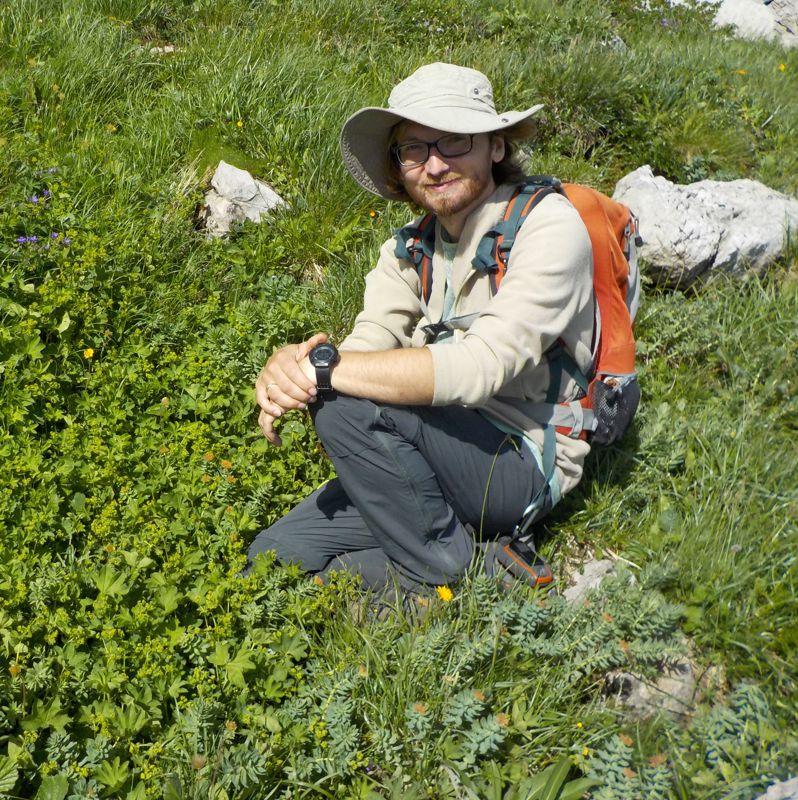

我是一名植物学家，同时也活跃在进化生物学和生物地理学领域。我特别感兴趣的是研究导致种群分离及新物种形成的机制。这种分离表现在不同的层面上：形态学、生态学和遗传学。这促使我开展关于杂交、多倍体、系统分类学、系统发育学、群体遗传学、细胞遗传学、植物形态学以及物种分布模型（SDM）的研究。
我毕业于弗罗茨瓦夫大学（硕士，2009年）和雷根斯堡大学（博士，2014年）。目前，我是弗罗茨瓦夫环境与生命科学大学（波兰弗罗茨瓦夫）的助理教授，从事科研与教学工作。
我在许多实验室方法上拥有丰富的经验，包括基于DNA/PCR的技术、流式细胞术和细胞遗传学。我对GIS（地理信息系统）、环境生态位模型（ENM）、地图和科学插图也充满兴趣。
直到2022年，我一直在主持“喀尔巴阡山脉滨菊属（Leucanthemum，菊科）的系统发育地理学与杂交研究”项目。在此期间，我利用分子标记、细胞遗传学手段研究了喀尔巴阡山脉特有种圆叶滨菊（Leucanthemum rotundifolium）及其相关类群，并将其与环境变数相结合。我的研究主要集中在菊科（Asteraceae） —— 这是陆生植物中最大的科，拥有约25000个物种，具有极高的多样性。
在生活中，我和家人住在奥莱希尼察（Oleśnica）附近的一栋小房子里。我通常会在花园里忙碌，或者对我那栋有着百年历史的老房子进行无休止的翻修：）
直到2022年，我都在主持 “喀尔巴阡山脉滨菊属（Leucanthemum，菊科）的系统发育地理学与杂交研究” 项目。您可以点击 这里 访问该项目的定制网页。我参与的项目列表如下：
研究访学：
其他资助：
这是我正在研究（或计划研究）的分类群列表。事实上，我也经常研究其他物种，特别是在GIS和物种分布建模的背景下。但对于下列分类群，我保留了一个DNA样本库，这些样本要么是在野外采集的，要么是从标本馆中提取的。
如果您愿意在我的研究中提供帮助或提供任何材料，我将非常高兴。特别是如果您能提供上述分类群的种子和干燥材料 —— 尤其是滨菊属（Leucanthemum）、广义菊花属（Chrysanthemum s.l.）或金纽扣属（Chrysanthellum） —— 我将不胜感激。此外，例如如果您不确定自己采集物种的倍性并希望对其进行鉴定（这是某些形态相似物种的重要特征，如滨菊 Leucanthemum vulgare 和 ircutianum 滨菊 Leucanthemum ircutianum），只要您向我寄送种子或硅胶干燥的材料，我可以帮您检测。我的地址位于本网站的底部。
自从事科学研究以来，我的目标之一就是将实验室工作与野外工作结合起来。因此，野外考察是我研究的重要组成部分，因为研究植物本身就意味着它们不会主动来找我，我需要亲自去采集它们。我经常专门为了采集样本而旅行，但即使在度假期间，我通常也会采集一些样本供进一步研究……到目前为止，我已经去过世界上许多地方，比如：俄罗斯、西班牙、乌克兰、土耳其、意大利、斯洛伐克、罗马尼亚、墨西哥、波斯尼亚和黑塞哥维那、克罗地亚、黑山、德国、捷克共和国、加拿大、美国……
现在，我也尝试将我的观察结果发布在 iNaturalist 上：
博士生导师：
来访国际学生：
硕士研究生：
学士本科生：
工程师/工程学位本科生：
我参与了相当多的课程教学。每年我为大约100-200名学生讲授理论课或带教实验/实践课。我教授过的课程包括：
欲获取最新发表的论文列表，请参阅我在 Google Scholar 或 Research Gate 上的个人主页。我的主要发表文章包括：
其他发表：
预印本：